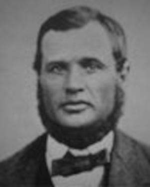

Maria Katarina Nilsdotter.

Född 29 jun 1840 i Mörtebäck, Hannäs (E) 23 .
Död 22 sep 1901 i Lindhem, Mantorp, Hannäs (E) 24 .
|
Född
28 mar 1832
i Dalstugan, Örsåsa, Södra Vi (H)
1
.
Död 27 apr 1913 i Lindbo, Mantorp, Hannäs (E) 2 . |
 |
|
Lars Otto Göransson Blomqvist
Född 28 mar 1832 i Dalstugan, Örsåsa, Södra Vi (H) 1 . Död 27 apr 1913 i Lindbo, Mantorp, Hannäs (E) 2 . |
|||
|
Gift
27 maj 1855
i Gärdserum (E)
19
.
Karolina Matilda Andersdotter. Född 8 okt 1830 i Gärdserum (E) 20 . Död 7 jan 1865 i Lindhem, Mantorp, Hannäs (E) 21 . |
|
Gift
29 dec 1865
i Hannäs (E)
22
.
Maria Katarina Nilsdotter.
Född 29 jun 1840 i Mörtebäck, Hannäs (E) 23 . Död 22 sep 1901 i Lindhem, Mantorp, Hannäs (E) 24 . |
Framställd 6 nov 2026 med hjälp av Disgen version 2025.